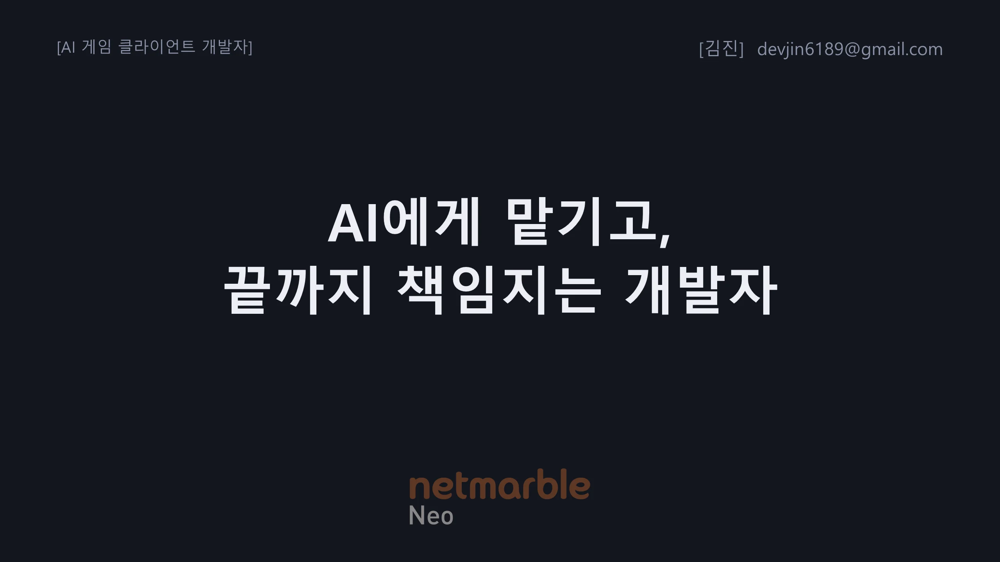
[AI 게임 클라이언트 개발자] [김진] devjin6189@gmail.com AI에게 맡기고, 끝까지 책임지는 개발자
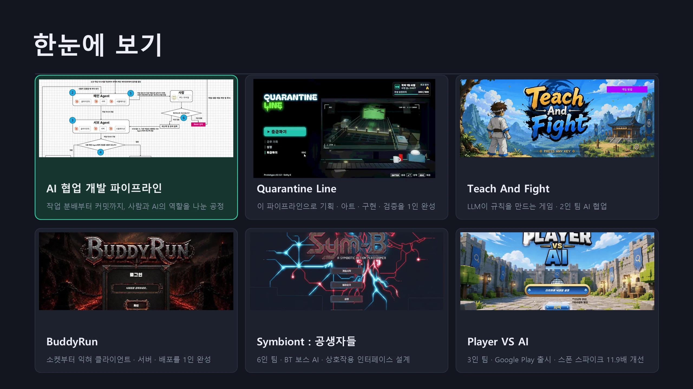
한눈에 보기 AI 협업 개발 파이프라인 작업 분배부터 커밋까지, 사람과 AI의 역할을 나눈 공정 Quarantine Line 이 파이프라인으로 기획 · 아트 · 구현 · 검증을 1인 완성 Teach And Fight LLM이 규칙을 만드는 게임 · 2인 팀 AI 협업 BuddyRun 소켓부터 익혀 클라이언트 · 서버 · 배포를 1인 완성 Symbiont : 공생자들 6인 팀 · BT 보스 AI · 상호작용 인터페이스 설계 Player VS AI 3인 팀 · Google Play 출시 · 스폰 스파이크 11.9배 개선
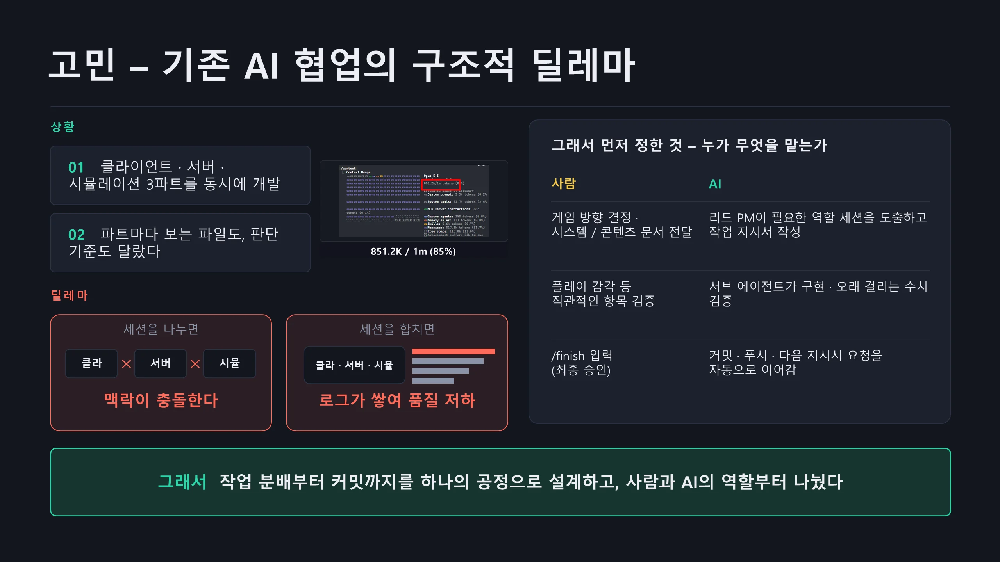
고민 – 기존 AI 협업의 구조적 딜레마 상황 01 클라이언트 · 서버 · 시뮬레이션 3파트를 동시에 개발 02 파트마다 보는 파일도, 판단 기준도 달랐다 딜레마 세션을 나누면 클라 ✕ 서버 ✕ 시뮬 맥락이 충돌한다 세션을 합치면 클라 · 서버 · 시뮬 로그가 쌓여 품질 저하 그래서 먼저 정한 것 – 누가 무엇을 맡는가 사람 AI 게임 방향 결정 · 시스템 / 콘텐츠 문서 전달 리드 PM이 필요한 역할 세션을 도출하고 작업 지시서 작성 플레이 감각 등 직관적인 항목 검증 서브 에이전트가 구현 · 오래 걸리는 수치 검증 /finish 입력 (최종 승인) 커밋 · 푸시 · 다음 지시서 요청을 자동으로 이어감 그래서 작업 분배부터 커밋까지를 하나의 공정으로 설계하고, 사람과 AI의 역할부터 나눴다
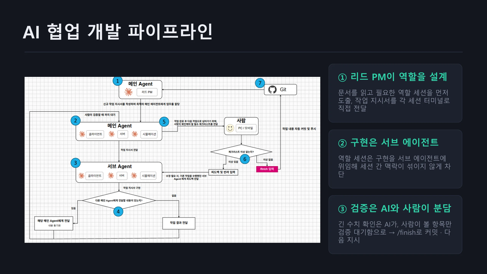
AI 협업 개발 파이프라인 ① 리드 PM이 역할을 설계 문서를 읽고 필요한 역할 세션을 먼저 도출, 작업 지시서를 각 세션 터미널로 직접 전달 ② 구현은 서브 에이전트 역할 세션은 구현을 서브 에이전트에 위임해 세션 간 맥락이 섞이지 않게 차단 ③ 검증은 AI와 사람이 분담 긴 수치 확인은 AI가, 사람이 볼 항목만 검증 대기함으로 → /finish로 커밋 · 다음 지시
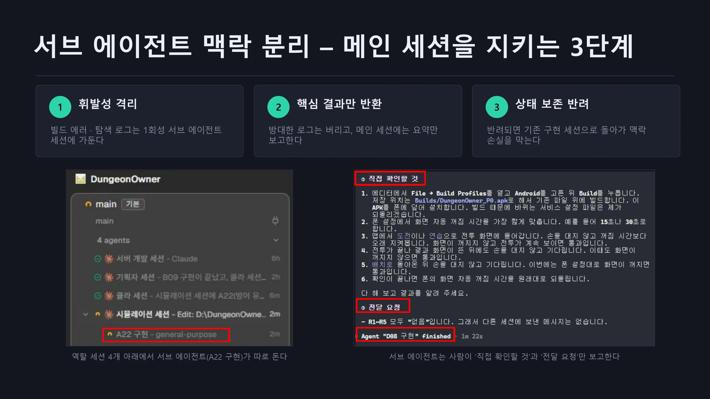
서브 에이전트 맥락 분리 – 메인 세션을 지키는 3단계 1 휘발성 격리 빌드 에러 · 탐색 로그는 1회성 서브 에이전트 세션에 가둔다 2 핵심 결과만 반환 방대한 로그는 버리고, 메인 세션에는 요약만 보고한다 3 상태 보존 반려 반려되면 기존 구현 세션으로 돌아가 맥락 손실을 막는다 역할 세션 4개 아래에서 서브 에이전트(A22 구현)가 따로 돈다 서브 에이전트는 사람이 ‘직접 확인할 것’과 ‘전달 요청’만 보고한다
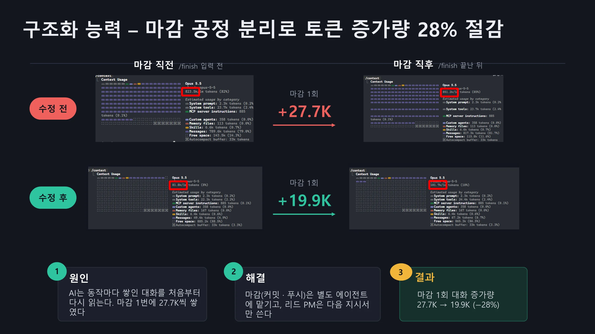
구조화 능력 – 마감 공정 분리로 토큰 증가량 28% 절감 마감 직전 /finish 입력 전 마감 직후 /finish 끝난 뒤 수정 전 마감 1회 +27.7K 수정 후 마감 1회 +19.9K 1 원인 AI는 동작마다 쌓인 대화를 처음부터 다시 읽는다. 마감 1번에 27.7K씩 쌓였다 해결 마감(커밋 · 푸시)은 별도 에이전트에 맡기고, 리드 PM은 다음 지시서만 쓴다 3 결과 마감 1회 대화 증가량 27.7K → 19.9K (−28%) 2
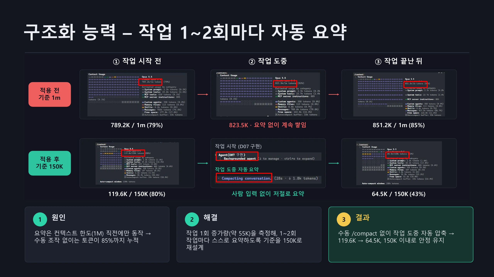
구조화 능력 – 작업 1~2회마다 자동 요약 1 원인 요약은 컨텍스트 한도(1M) 직전에만 동작 → 수동 조작 없이는 토큰이 85%까지 누적 2 해결 작업 1회 증가량(약 55K)을 측정해, 1~2회 작업마다 스스로 요약하도록 기준을 150K로 재설계 3 결과 수동 /compact 없이 작업 도중 자동 압축 → 119.6K → 64.5K, 150K 이내로 안정 유지
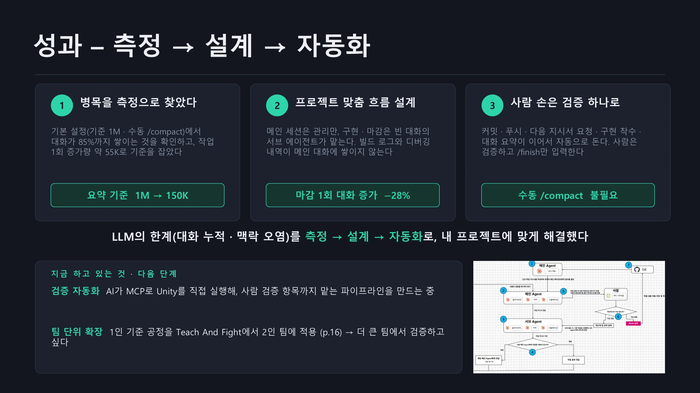
성과 – 측정 → 설계 → 자동화 1 병목을 측정으로 찾았다 기본 설정(기준 1M · 수동 /compact)에서 대화가 85%까지 쌓이는 것을 확인하고, 작업 1회 증가량 약 55K로 기준을 잡았다 요약 기준 1M → 150K 2 프로젝트 맞춤 흐름 설계 메인 세션은 관리만, 구현 · 마감은 빈 대화의 서브 에이전트가 맡는다. 빌드 로그와 디버깅 내역이 메인 대화에 쌓이지 않는다 마감 1회 대화 증가 −28% 3 사람 손은 검증 하나로 커밋 · 푸시 · 다음 지시서 요청 · 구현 착수 · 대화 요약이 이어서 자동으로 돈다. 사람은 검증하고 /finish만 입력한다 수동 /compact 불필요 LLM의 한계(대화 누적 · 맥락 오염)를 측정 → 설계 → 자동화로, 내 프로젝트에 맞게 해결했다 지금 하고 있는 것 · 다음 단계 검증 자동화 AI가 MCP로 Unity를 직접 실행해, 사람 검증 항목까지 맡는 파이프라인을 만드는 중 팀 단위 확장 1인 기준 공정을 Teach And Fight에서 2인 팀에 적용 (p.16) → 더 큰 팀에서 검증하고 싶다
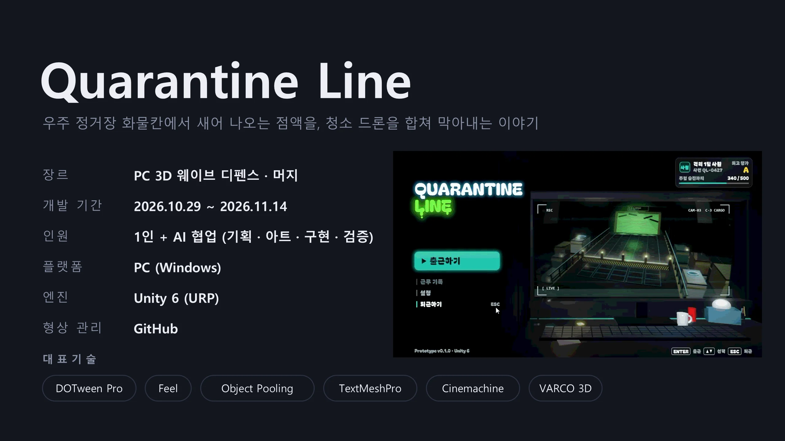
Quarantine Line 우주 정거장 화물칸에서 새어 나오는 점액을, 청소 드론을 합쳐 막아내는 이야기 장르 PC 3D 웨이브 디펜스 · 머지 개발 기간 2026.10.29 ~ 2026.11.14 인원 1인 + AI 협업 (기획 · 아트 · 구현 · 검증) 플랫폼 PC (Windows) 엔진 Unity 6 (URP) 형상 관리 GitHub 대 표 기 술 DOTween Pro Feel Object Pooling TextMeshPro Cinemachine VARCO 3D
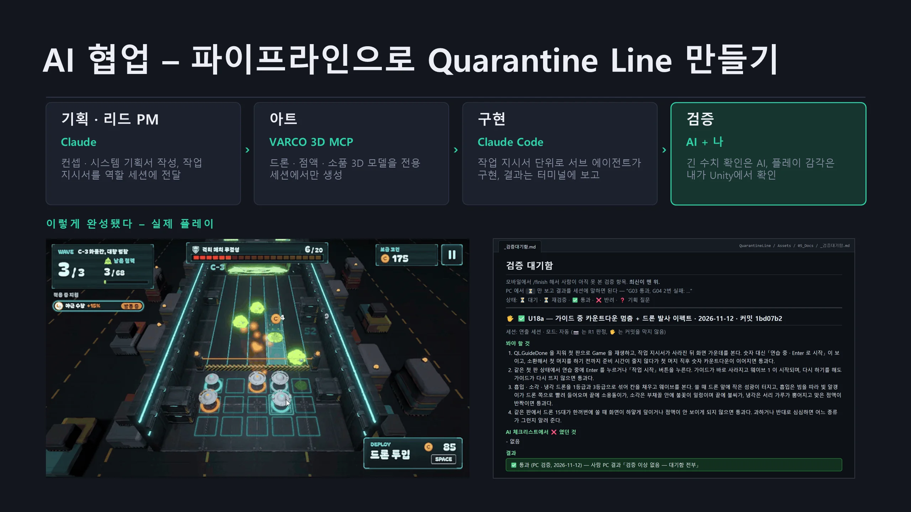
AI 협업 – 파이프라인으로 Quarantine Line 만들기 기획 · 리드 PM Claude 컨셉 · 시스템 기획서 작성, 작업 지시서를 역할 세션에 전달 › 아트 VARCO 3D MCP 드론 · 점액 · 소품 3D 모델을 전용 세션에서만 생성 › 구현 Claude Code 작업 지시서 단위로 서브 에이전트가 구현, 결과는 터미널에 보고 › 검증 AI + 나 긴 수치 확인은 AI, 플레이 감각은 내가 Unity에서 확인 이렇게 완성됐다 – 실제 플레이
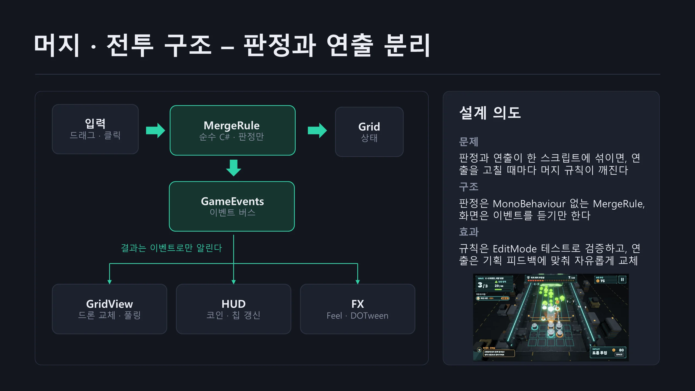
머지 · 전투 구조 – 판정과 연출 분리 입력 드래그 · 클릭 MergeRule 순수 C# · 판정만 Grid 상태 GameEvents 이벤트 버스 결과는 이벤트로만 알린다 GridView 드론 교체 · 풀링 HUD 코인 · 칩 갱신 FX Feel · DOTween 설계 의도 문제 판정과 연출이 한 스크립트에 섞이면, 연출을 고칠 때마다 머지 규칙이 깨진다 구조 판정은 MonoBehaviour 없는 MergeRule, 화면은 이벤트를 듣기만 한다 효과 규칙은 EditMode 테스트로 검증하고, 연출은 기획 피드백에 맞춰 자유롭게 교체
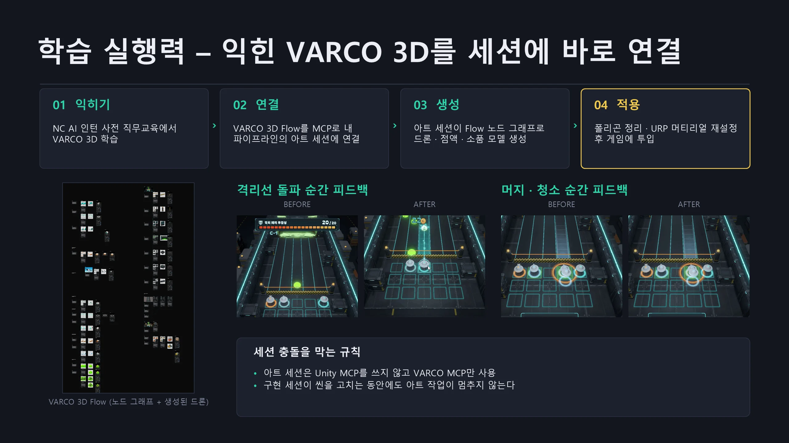
학습 실행력 – 익힌 VARCO 3D를 세션에 바로 연결 01 익히기 NC AI 인턴 사전 직무교육에서 VARCO 3D 학습 › 02 연결 VARCO 3D Flow를 MCP로 내 파이프라인의 아트 세션에 연결 › 03 생성 아트 세션이 Flow 노드 그래프로 드론 · 점액 · 소품 모델 생성 › 04 적용 폴리곤 정리 · URP 머티리얼 재설정 후 게임에 투입 VARCO 3D Flow (노드 그래프 + 생성된 드론) 세션 충돌을 막는 규칙 • 아트 세션은 Unity MCP를 쓰지 않고 VARCO MCP만 사용 • 구현 세션이 씬을 고치는 동안에도 아트 작업이 멈추지 않는다 격리선 돌파 순간 피드백 BEFORE AFTER 머지 · 청소 순간 피드백 BEFORE AFTER
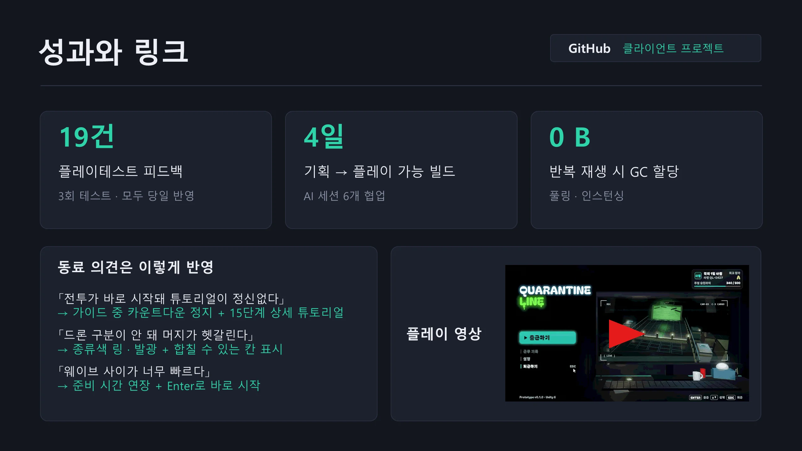
성과와 링크 GitHub 클라이언트 프로젝트 19건 플레이테스트 피드백 3회 테스트 · 모두 당일 반영 동료 의견은 이렇게 반영 「전투가 바로 시작돼 튜토리얼이 정신없다」 → 가이드 중 카운트다운 정지 + 15단계 상세 튜토리얼 「드론 구분이 안 돼 머지가 헷갈린다」 → 종류색 링 · 발광 + 합칠 수 있는 칸 표시 「웨이브 사이가 너무 빠르다」 → 준비 시간 연장 + Enter로 바로 시작 플레이 영상 4일 기획 → 플레이 가능 빌드 AI 세션 6개 협업 0 B 반복 재생 시 GC 할당 풀링 · 인스턴싱
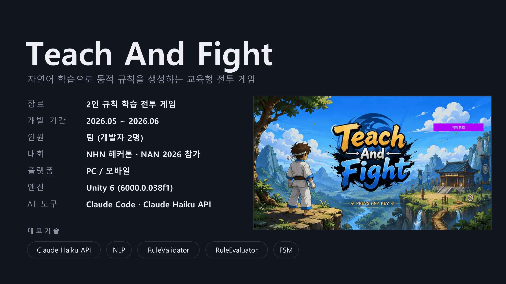
Teach And Fight 자연어 학습으로 동적 규칙을 생성하는 교육형 전투 게임 장르 2인 규칙 학습 전투 게임 개발 기간 2026.05 ~ 2026.06 인원 팀 (개발자 2명) 대회 NHN 해커톤 · NAN 2026 참가 플랫폼 PC / 모바일 엔진 Unity 6 (6000.0.038f1) AI 도구 Claude Code · Claude Haiku API 대 표 기 술 Claude Haiku API NLP RuleValidator RuleEvaluator FSM
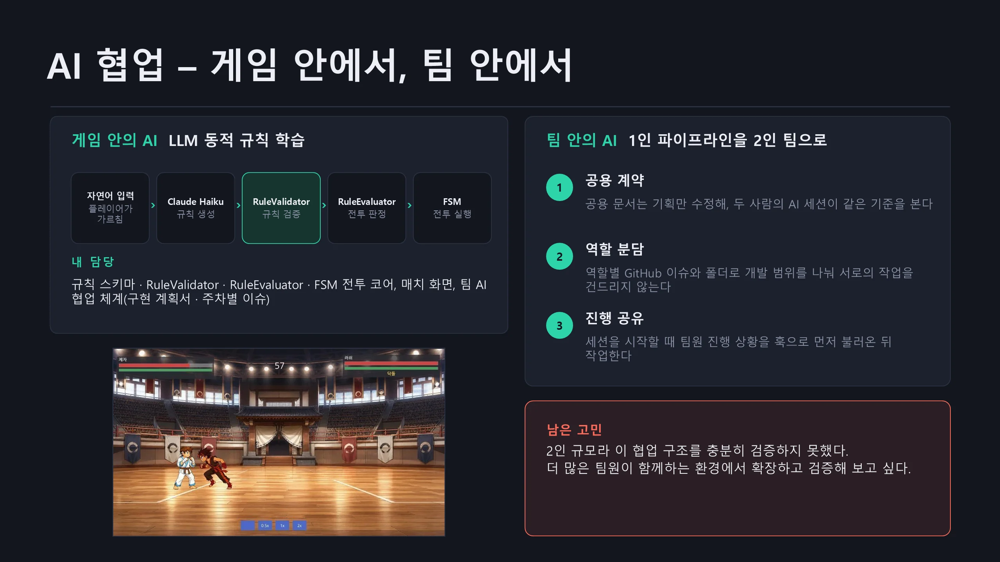
AI 협업 – 게임 안에서, 팀 안에서 게임 안의 AI LLM 동적 규칙 학습 자연어 입력 플레이어가 가르침 › Claude Haiku 규칙 생성 › RuleValidator 규칙 검증 › RuleEvaluator 전투 판정 › FSM 전투 실행 내 담당 규칙 스키마 · RuleValidator · RuleEvaluator · FSM 전투 코어, 매치 화면, 팀 AI 협업 체계(구현 계획서 · 주차별 이슈) 팀 안의 AI 1인 파이프라인을 2인 팀으로 1 공용 계약 공용 문서는 기획만 수정해, 두 사람의 AI 세션이 같은 기준을 본다 2 역할 분담 역할별 GitHub 이슈와 폴더로 개발 범위를 나눠 서로의 작업을 건드리지 않는다 3 진행 공유 세션을 시작할 때 팀원 진행 상황을 훅으로 먼저 불러온 뒤 작업한다 남은 고민 2인 규모라 이 협업 구조를 충분히 검증하지 못했다. 더 많은 팀원이 함께하는 환경에서 확장하고 검증해 보고 싶다.
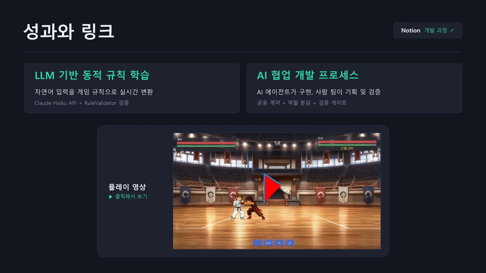
성과와 링크 Notion 개발 과정 ↗ LLM 기반 동적 규칙 학습 자연어 입력을 게임 규칙으로 실시간 변환 Claude Haiku API + RuleValidator 검증 AI 협업 개발 프로세스 AI 에이전트가 구현, 사람 팀이 기획 및 검증 공용 계약 + 역할 분담 + 검증 게이트 플레이 영상 ▶ 클릭해서 보기
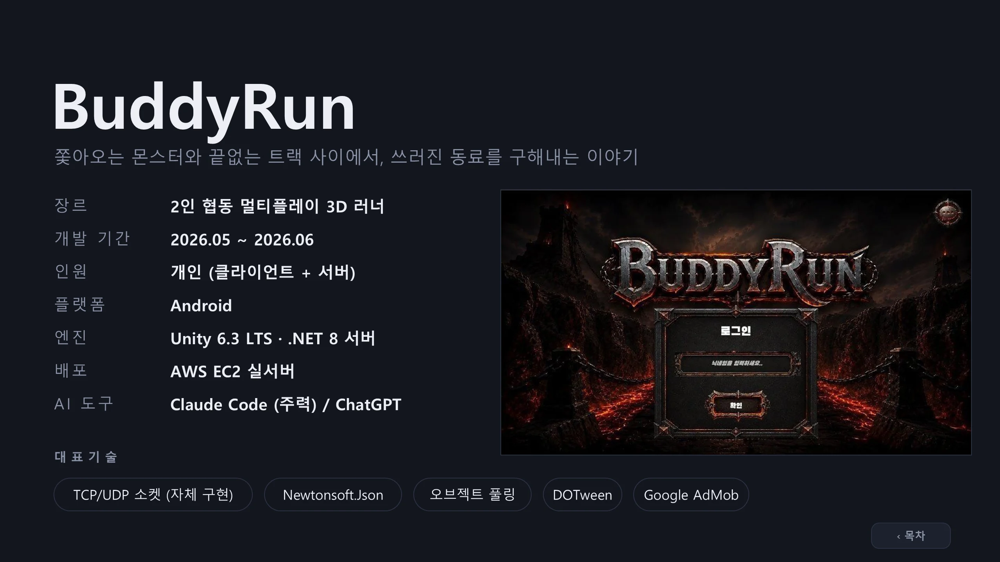
BuddyRun 쫓아오는 몬스터와 끝없는 트랙 사이에서, 쓰러진 동료를 구해내는 이야기 장르 2인 협동 멀티플레이 3D 러너 개발 기간 2026.05 ~ 2026.06 인원 개인 (클라이언트 + 서버) 플랫폼 Android 엔진 Unity 6.3 LTS · .NET 8 서버 배포 AWS EC2 실서버 AI 도구 Claude Code (주력) / ChatGPT 대 표 기 술 TCP/UDP 소켓 (자체 구현) Newtonsoft.Json 오브젝트 풀링 DOTween Google AdMob ‹ 목차
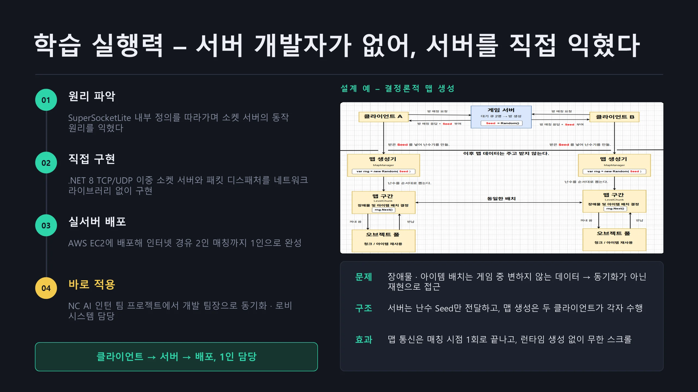
학습 실행력 – 서버 개발자가 없어, 서버를 직접 익혔다 01 원리 파악 SuperSocketLite 내부 정의를 따라가며 소켓 서버의 동작 원리를 익혔다 02 직접 구현 .NET 8 TCP/UDP 이중 소켓 서버와 패킷 디스패처를 네트워크 라이브러리 없이 구현 03 실서버 배포 AWS EC2에 배포해 인터넷 경유 2인 매칭까지 1인으로 완성 04 바로 적용 NC AI 인턴 팀 프로젝트에서 개발 팀장으로 동기화 · 로비 시스템 담당 클라이언트 → 서버 → 배포, 1인 담당 설계 예 – 결정론적 맵 생성 문제 장애물 · 아이템 배치는 게임 중 변하지 않는 데이터 → 동기화가 아닌 재현으로 접근 구조 서버는 난수 Seed만 전달하고, 맵 생성은 두 클라이언트가 각자 수행 효과 맵 통신은 매칭 시점 1회로 끝나고, 런타임 생성 없이 무한 스크롤
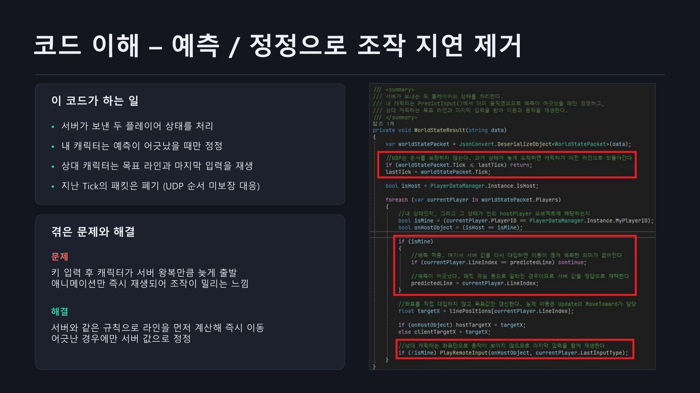
코드 이해 – 예측 / 정정으로 조작 지연 제거 이 코드가 하는 일 • 서버가 보낸 두 플레이어 상태를 처리 • 내 캐릭터는 예측이 어긋났을 때만 정정 • 상대 캐릭터는 목표 라인과 마지막 입력을 재생 • 지난 Tick의 패킷은 폐기 (UDP 순서 미보장 대응) 겪은 문제와 해결 문제 키 입력 후 캐릭터가 서버 왕복만큼 늦게 출발 애니메이션만 즉시 재생되어 조작이 밀리는 느낌 해결 서버와 같은 규칙으로 라인을 먼저 계산해 즉시 이동 어긋난 경우에만 서버 값으로 정정
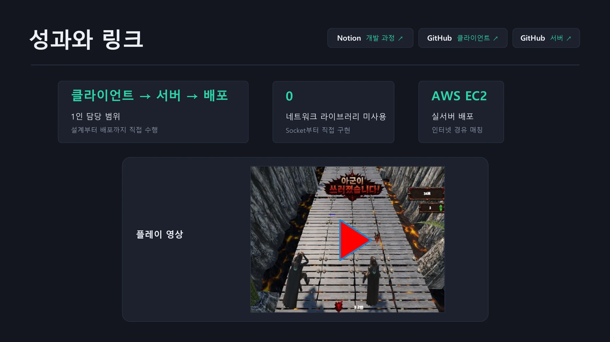
성과와 링크 GitHub 서버 ↗ GitHub 클라이언트 ↗ Notion 개발 과정 ↗ 클라이언트 → 서버 → 배포 1인 담당 범위 설계부터 배포까지 직접 수행 0 네트워크 라이브러리 미사용 Socket부터 직접 구현 AWS EC2 실서버 배포 인터넷 경유 매칭 플레이 영상
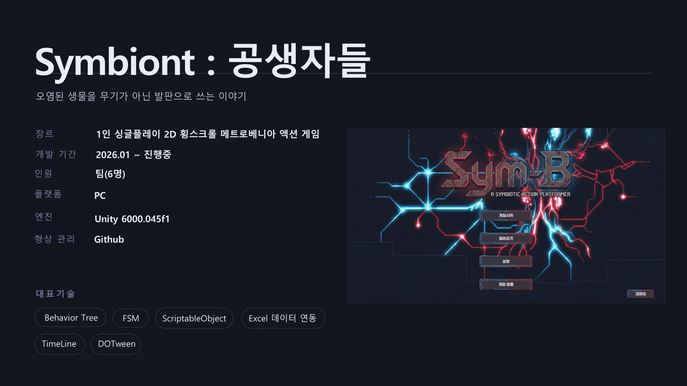
Symbiont : 공생자들 오염된 생물을 무기가 아닌 발판으로 쓰는 이야기 장르 1인 싱글플레이 2D 횡스크롤 메트로베니아 액션 게임 개발 기간 2026.01 ~ 진행중 인원 팀(6명) 플랫폼 PC 엔진 Unity 6000.045f1 형상 관리 Github 대표기술 Behavior Tree TimeLine ScriptableObject Excel 데이터 연동 FSM DOTween
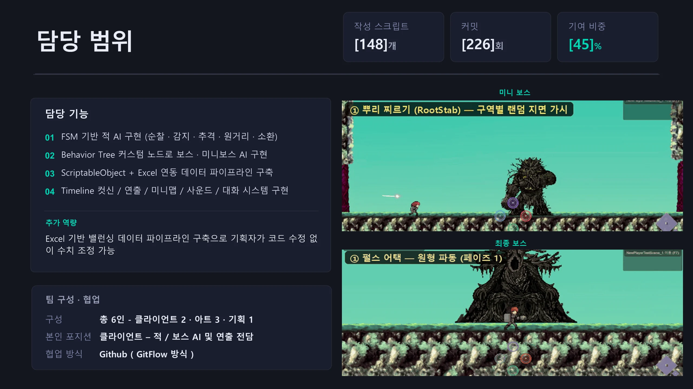
담당 범위 담당 기능 01 FSM 기반 적 AI 구현 (순찰 · 감지 · 추격 · 원거리 · 소환) 02 Behavior Tree 커스텀 노드로 보스 · 미니보스 AI 구현 03 ScriptableObject + Excel 연동 데이터 파이프라인 구축 04 Timeline 컷신 / 연출 / 미니맵 / 사운드 / 대화 시스템 구현 추가 역량 팀 구성 · 협업 구성 총 6인 - 클라이언트 2 · 아트 3 · 기획 1 본인 포지션 클라이언트 – 적 / 보스 AI 및 연출 전담 협업 방식 Github ( GitFlow 방식 ) Excel 기반 밸런싱 데이터 파이프라인 구축으로 기획자가 코드 수정 없이 수치 조정 가능 작성 스크립트 [148]개 커밋 [226]회 기여 비중 [45]% 미니 보스 최종 보스
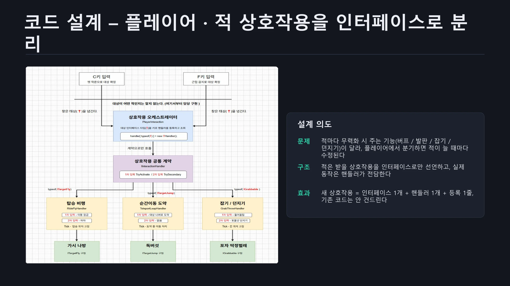
코드 설계 – 플레이어 · 적 상호작용을 인터페이스로 분리 설계 의도 문제 적마다 무력화 시 주는 기능(버프 / 발판 / 잡기 / 던지기)이 달라, 플레이어에서 분기하면 적이 늘 때마다 수정된다 구조 적은 받을 상호작용을 인터페이스로만 선언하고, 실제 동작은 핸들러가 전담한다 효과 새 상호작용 = 인터페이스 1개 + 핸들러 1개 + 등록 1줄, 기존 코드는 안 건드린다
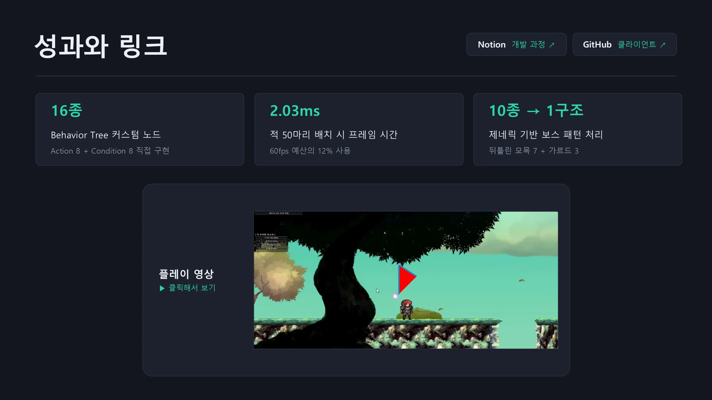
성과와 링크 GitHub 클라이언트 ↗ Notion 개발 과정 ↗ 16종 Behavior Tree 커스텀 노드 Action 8 + Condition 8 직접 구현 2.03ms 적 50마리 배치 시 프레임 시간 60fps 예산의 12% 사용 10종 → 1구조 제네릭 기반 보스 패턴 처리 뒤틀린 모목 7 + 가르드 3 플레이 영상 ▶ 클릭해서 보기
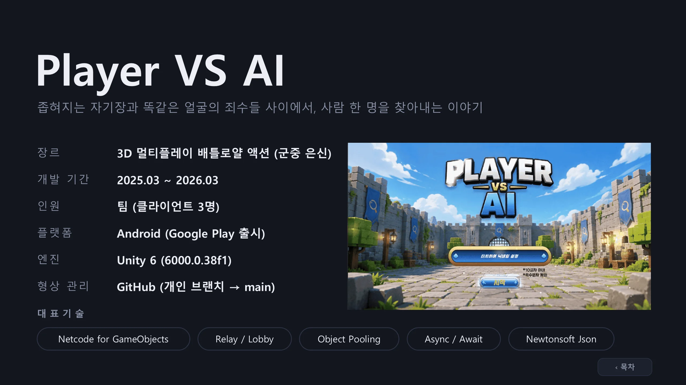
Player VS AI 좁혀지는 자기장과 똑같은 얼굴의 죄수들 사이에서, 사람 한 명을 찾아내는 이야기 장르 3D 멀티플레이 배틀로얄 액션 (군중 은신) 개발 기간 2025.03 ~ 2026.03 인원 팀 (클라이언트 3명) 플랫폼 Android (Google Play 출시) 엔진 Unity 6 (6000.0.38f1) 형상 관리 GitHub (개인 브랜치 → main) 대 표 기 술 Netcode for GameObjects Relay / Lobby Object Pooling Async / Await Newtonsoft Json ‹ 목차
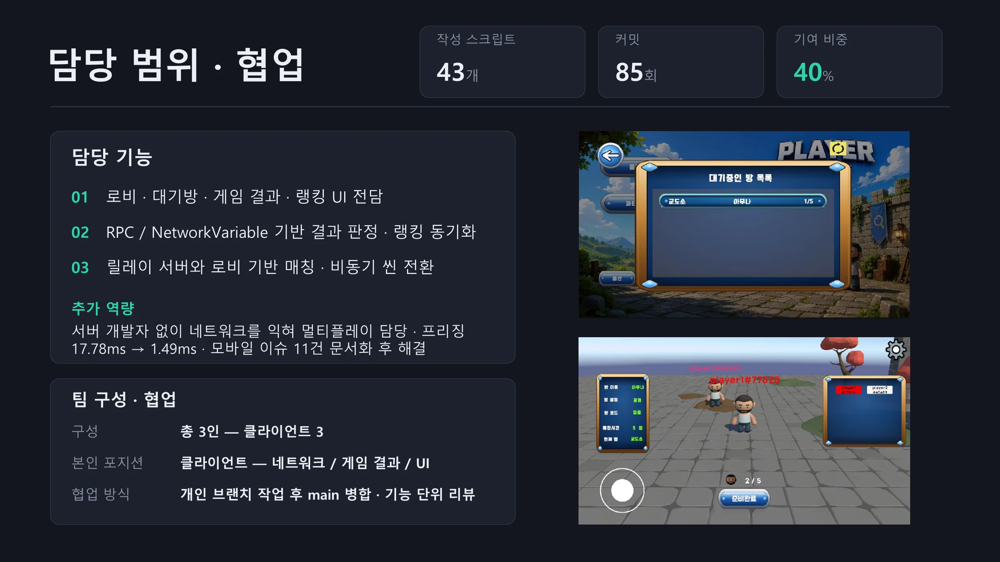
담당 범위 · 협업 작성 스크립트 43개 커밋 85회 기여 비중 40% 담당 기능 01 로비 · 대기방 · 게임 결과 · 랭킹 UI 전담 02 RPC / NetworkVariable 기반 결과 판정 · 랭킹 동기화 03 릴레이 서버와 로비 기반 매칭 · 비동기 씬 전환 추가 역량 서버 개발자 없이 네트워크를 익혀 멀티플레이 담당 · 프리징 17.78ms → 1.49ms · 모바일 이슈 11건 문서화 후 해결 팀 구성 · 협업 구성 총 3인 — 클라이언트 3 본인 포지션 클라이언트 — 네트워크 / 게임 결과 / UI 협업 방식 개인 브랜치 작업 후 main 병합 · 기능 단위 리뷰
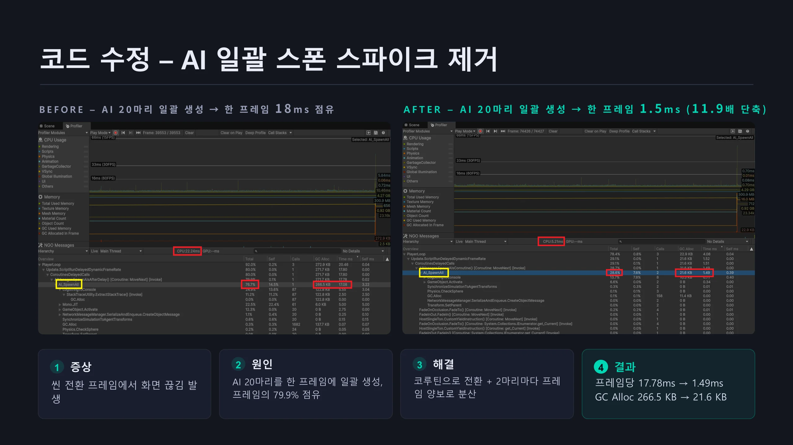
1 증상 씬 전환 프레임에서 화면 끊김 발생 2 원인 AI 20마리를 한 프레임에 일괄 생성, 프레임의 79.9% 점유 3 해결 코루틴으로 전환 + 2마리마다 프레임 양보로 분산 4 결과 프레임당 17.78ms → 1.49ms GC Alloc 266.5 KB → 21.6 KB 코드 수정 – AI 일괄 스폰 스파이크 제거 BEFORE – AI 20마리 일괄 생성 → 한 프레임 18ms 점유 AFTER – AI 20마리 일괄 생성 → 한 프레임 1.5ms (11.9배 단축)
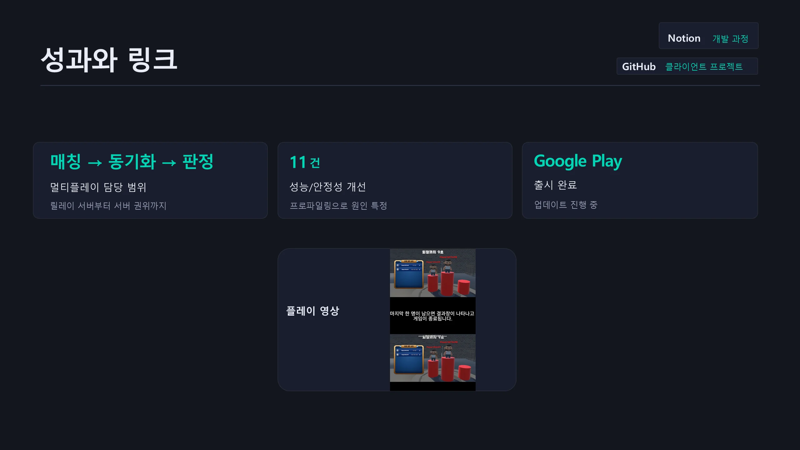
성과와 링크 GitHub 클라이언트 프로젝트 Notion 개발 과정 11 성능/안정성 개선 매칭 → 동기화 → 판정 멀티플레이 담당 범위 Google Play 출시 완료 프로파일링으로 원인 특정 릴레이 서버부터 서버 권위까지 플레이 영상 업데이트 진행 중 건
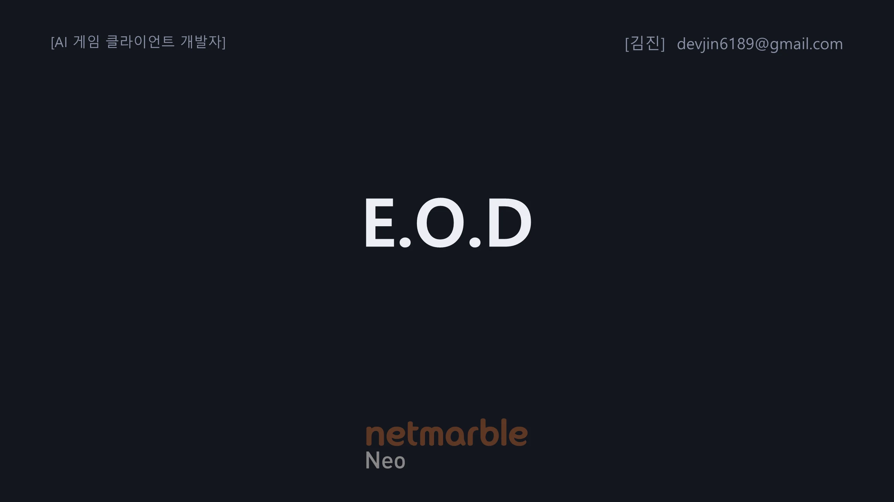
E.O.D [AI 게임 클라이언트 개발자] [김진] devjin6189@gmail.com